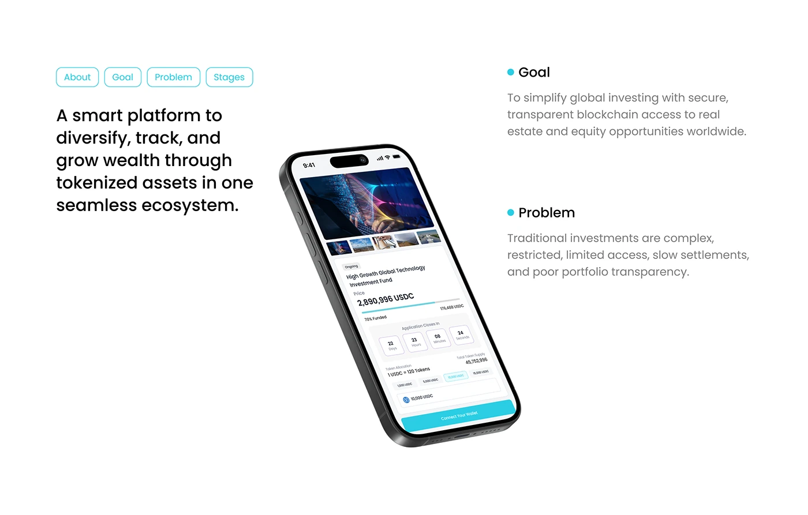
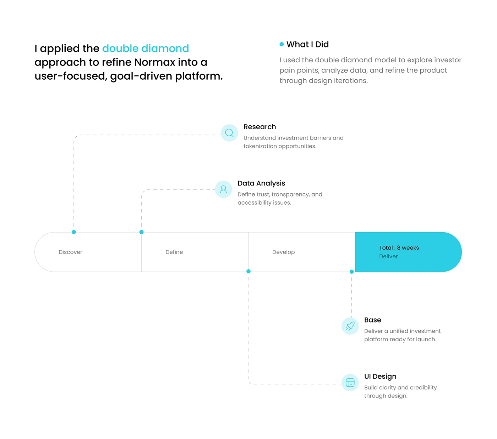
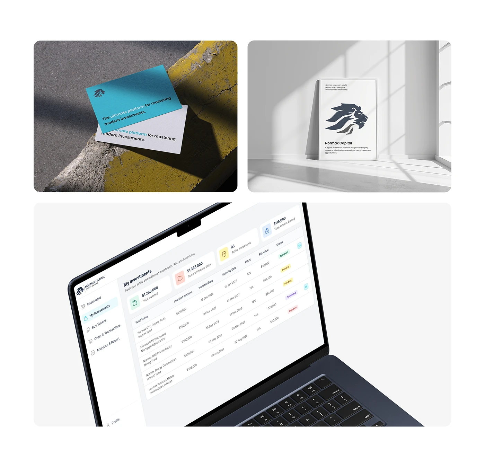
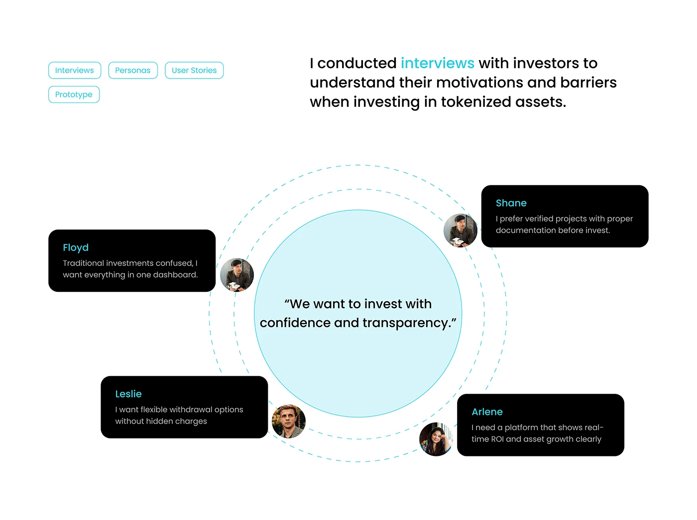
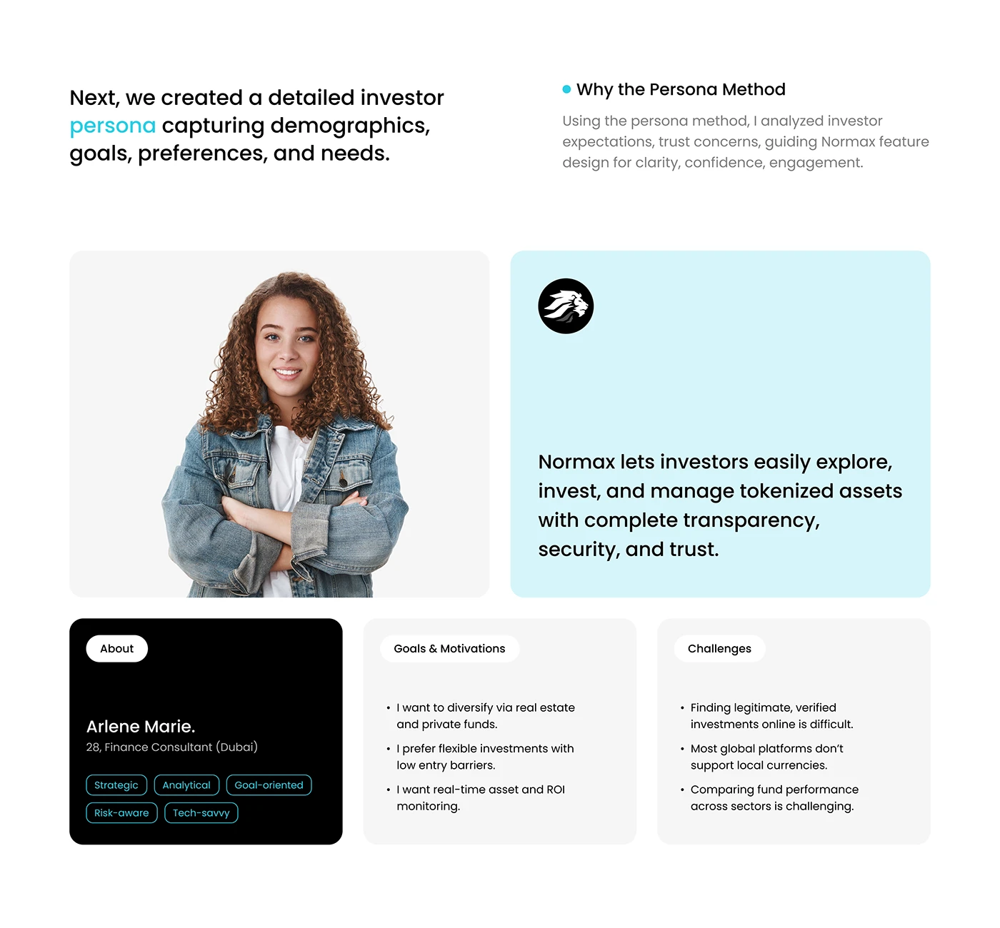
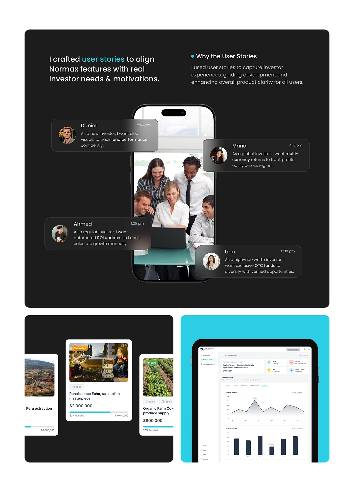
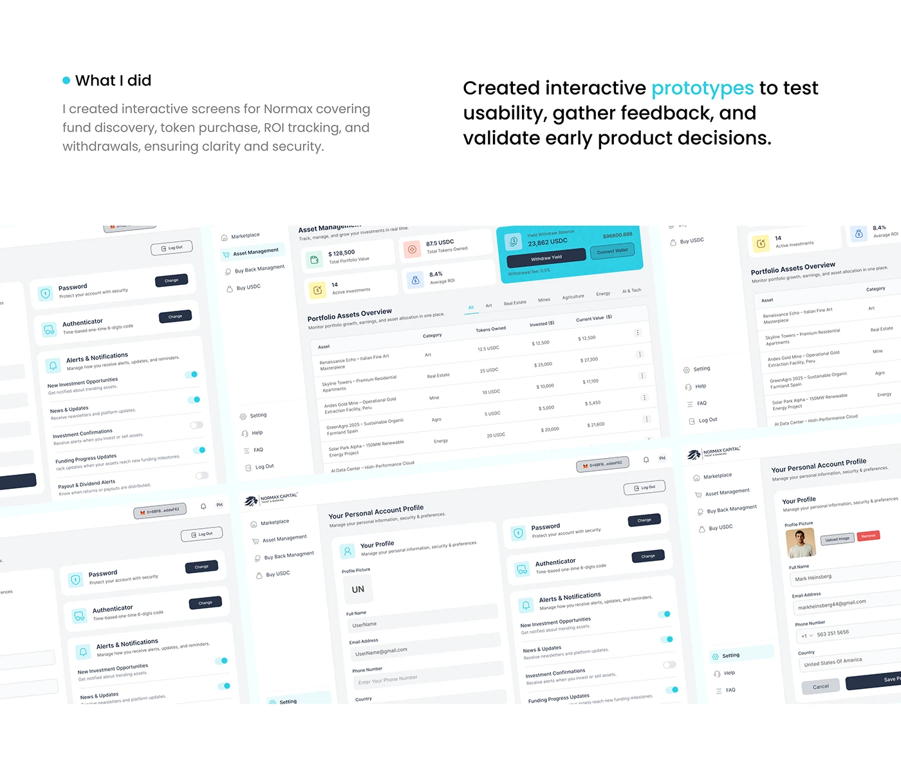
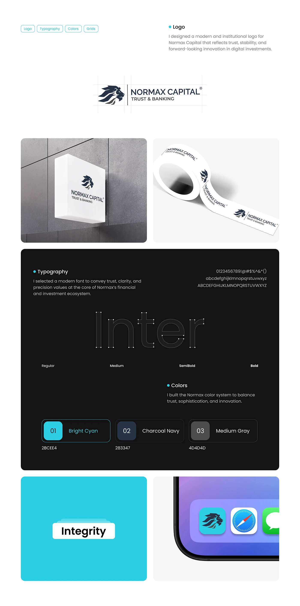
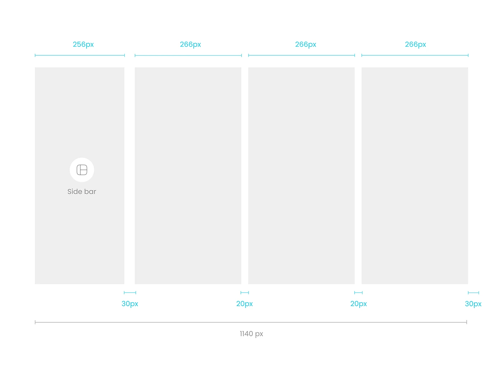
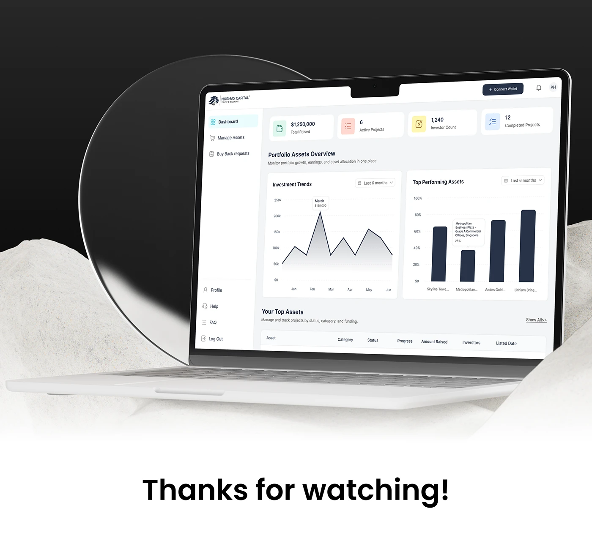

Establish trust
Verified assets, clear documentation and an institutional visual language.
Fintech · Web3 · Product Design
Designing trust into tokenized investing.
Project Overview
Normax Capital is a licensed trust and fiduciary platform that gives investors access to tokenized real-world assets, including real estate, fine art, mines, agriculture and energy projects.
I led the complete design engagement, from a new brand identity to onboarding, marketplace discovery, wallet funding, investment management and portfolio analytics.

The Challenge
Traditional investments carry high entry barriers, slow settlements and fragmented portfolio visibility. Tokenization can improve access, but it also introduces an unfamiliar model that investors must understand before they commit real money.
The CEO's client base skewed 40+, financially established but not always highly tech-fluent. The product therefore needed the clarity of familiar banking software while still communicating the advantages of blockchain.
Verified assets, clear documentation and an institutional visual language.
Guided journeys and visual portfolio data instead of technical abstraction.
A reusable system that covered the complete investment lifecycle in eight weeks.
The Approach
With no internal research team, I used structured stakeholder discovery to surface the audience, business goals and launch constraints. Those inputs became investor needs, personas, user stories and testable prototypes.
The Double Diamond framework kept the eight-week sprint focused: discover the barriers, define trust and transparency needs, develop the product system, then deliver a unified MVP.






Visual Identity
The lion mark projects stability and authority. Inter keeps financial data legible, while bright cyan adds energy to a restrained charcoal and gray foundation.
The system deliberately feels closer to a modern trust platform than a speculative crypto product. Credibility leads; innovation supports it.


Product Experience
The experience spans authentication, marketplace discovery, wallet connection, USDC funding, token purchase, active investments, analytics and secure account management.
Predictable navigation and chart-led reporting help investors understand performance without calculating returns manually or learning unfamiliar crypto conventions.



The Outcome
The result was a unified investment experience covering the full lifecycle, supported by a scalable visual system and a clear design rationale grounded in the audience, the market and the MVP timeline.